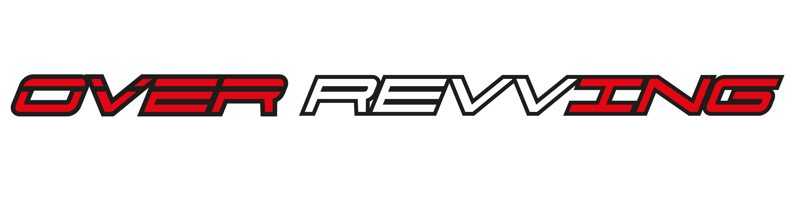

| Overrevving — Motorsport Standings 2026 | |
|---|---|
|
 Logo ufficiale del portale Overrevving
|
|
| Informazioni Generali | |
| Nome portale | Overrevving / Motorsport Standings 2026 |
| Dominio di produzione | overrevving.it (CNAME GitHub Pages) |
| Discipline monitorate | 7 (MotoGP, Moto2, Moto3, SBK, MXGP, MX2, Formula 1) |
| Autore / Brand | Andrea Galassi (@ziog.2) / Overrevving Etsy Shop |
| Architettura Software | |
| Paradigma | Jamstack / Single Page Application (Serverless) |
| Frontend Stack | HTML5 semantico, CSS3 Grid/Flexbox moderno, Vanilla JS (ES6+) |
| Librerie integrate | SortableJS 1.15.2 (Drag & Drop), PDF.js 3.11.174 (Parser OCR-less) |
| Database / Storage | JSONBin.io (Bin REST cloud JSON con chiave di sicurezza) |
| Orchestratore Backend | GitHub Actions (Runner Ubuntu, script Python 3 automatico via Cron) |
| Persistenza Client | Web Storage API (localStorage per ordinamento colonne e preferiti) |
| Analytics | Hits.sh (tracciamento visite tramite badge SVG) |
Overrevving è una piattaforma web specializzata nel tracciamento in tempo reale delle classifiche mondiali dei principali sport motoristici su due e quattro ruote per la stagione agonistica 2026. Il progetto nasce per offrire agli appassionati una visualizzazione unificata, priva di pubblicità invasive, ultra-veloce e interattiva, capace di affiancare in un'unica interfaccia sia le categorie del Motomondiale (MotoGP, Moto2, Moto3), sia le derivate di serie (WorldSBK), il fuoristrada iridato (MXGP, MX2) e la Formula 1.
L'infrastruttura tecnologica è costruita secondo la filosofia Jamstack Serverless: il sito non necessita di server applicativi proprietari attivi h24 né di database SQL a pagamento. I dati risiedono su un servizio cloud di archiviazione JSON (JSONBin.io) e vengono aggiornati automaticamente nei fine settimana di gara tramite pipeline GitHub Actions scritte in Python, con il supporto di un pannello amministrativo protetto da credenziali (admin.html) in grado di estrarre i dati direttamente dai bollettini PDF ufficiali di gara.
Il portale Overrevving è stato concepito con l'obiettivo di abbattere la frammentazione informativa che caratterizza il motorsport mondiale. Solitamente, un appassionato o addetto ai lavori deve consultare da 4 a 6 siti web diversi (spesso pesanti, carichi di banner promozionali o protetti da paywall) per monitorare i punti di piloti e case costruttrici tra MotoGP, Superbike, Motocross e Formula 1.
Overrevving risolve questo problema aggregando in una singola pagina a griglia 7 campionati di primo livello:
L'intera infrastruttura sfrutta il pattern Jamstack (JavaScript, APIs, Markup pre-renderizzato). Le caratteristiche fondamentali sono:
La struttura del repository si presenta snella e modulare:
/ (Radice del progetto)
│
├── CNAME # Configurazione DNS personalizzato (overrevving.it)
├── index.html # Frontend principale: dashboard pubblica a 7 colonne
├── category.html # Vista di dettaglio: Piloti, Costruttori, Team e Calendario
├── admin.html # Cruscotto di gestione, login, trigger API e parser PDF
├── guida.html # Questa enciclopedia tecnica completa in formato locale
├── logo.png # Asset grafico Overrevving visualizzato nell'header
│
├── .github/
│ └── workflows/
│ └── update-f1-v3.yaml # Pipeline GitHub Actions (cron weekend e script Python)
│
└── data/ # Archivio PDF ufficiali per l'importazione
├── SBK.pdf # Bollettino ufficiale WorldSBK
├── SBK2.pdf # Eventuale bollettino di riserva / gara 2
├── MGP.pdf # Report statistiche ufficiali Dorna MotoGP (Team & Costruttori)
├── M2.pdf # Report statistiche ufficiali Dorna Moto2 (Team & Costruttori)
└── M3.pdf # Report statistiche ufficiali Dorna Moto3 (Team & Costruttori)Tutte le pagine del portale non si collegano direttamente e simultaneamente a decine di API esterne (cosa che causerebbe problemi di rate limiting, latenza e blocchi CORS sui browser degli utenti). Invece, si interfacciano con un unico bin cloud hosted su JSONBin.io, che funge da database NoSQL centralizzato (Single Source of Truth).
| Parametro | Valore di Configurazione | Note |
|---|---|---|
| BIN ID | 6a3064e4f5f4af5e29f7958b |
Identificativo univoco globale del record cloud |
| Endpoint di Lettura (Pubblica) | https://api.jsonbin.io/v3/b/6a3064e4f5f4af5e29f7958b/latest |
Utilizzato da index.html e category.html |
| Metodo di Scrittura | PUT https://api.jsonbin.io/v3/b/6a3064e4f5f4af5e29f7958b |
Riservato alle GitHub Actions e ad admin.html |
| Header di Autenticazione | X-Access-Key: <API_KEY> |
Richiesto per autorizzare la lettura/scrittura dei dati |
Il payload salvato all'interno del Bin ha una struttura a dizionario JSON in cui ogni chiave rappresenta un campionato o una sottoclassifica specifica. Ogni classifica è un array ordinato di oggetti con le chiavi standard name (stringa) e pts (numero con virgola mobile o intero):
{
"motogp": [
{ "name": "Marc Marquez", "pts": 37.0 },
{ "name": "Francesco Bagnaia", "pts": 31.0 }
],
"motogp_constructors": [
{ "name": "Ducati", "pts": 37.0 },
{ "name": "KTM", "pts": 22.0 }
],
"motogp_teams": [
{ "name": "Ducati Lenovo Team", "pts": 68.0 },
{ "name": "Gresini Racing MotoGP", "pts": 40.0 }
],
"moto2": [ ... ],
"moto2_constructors": [ ... ],
"moto2_teams": [ ... ],
"moto3": [ ... ],
"moto3_constructors": [ ... ],
"moto3_teams": [ ... ],
"sbk": [
{ "name": "Toprak Razgatlioglu", "pts": 58.0 },
{ "name": "Nicolo Bulega", "pts": 49.0 }
],
"mxgp": [
{ "name": "Jorge Prado", "pts": 50 },
{ "name": "Tim Gajser", "pts": 44 }
],
"mx2": [ ... ],
"f1": [
{ "name": "Max Verstappen", "pts": 26.0 },
{ "name": "Lando Norris", "pts": 18.0 }
],
"_updated": "30/08/2026, 20:00:15 · Auto (Domenica)"
}Il percorso compiuto dai dati è suddiviso in tre macro-fasi:
PUT con il timestamp corrente salvato nella proprietà _updated.index.html effettua un'unica chiamata HTTP GET asincrona (fetch()) a JSONBin. I dati vengono trasformati in tabelle HTML in meno di 200ms.La Dorna Sports, detentrice dei diritti commerciali del Motomondiale, si affida all'infrastruttura cloud di Pulselive per alimentare i widget del sito ufficiale motogp.com. Overrevving si interfaccia direttamente con questi endpoint REST pubblici ad altissima affidabilità:
| Parametro | Identificativo / Valore UUID 2026 |
|---|---|
| Base URL | https://api.motogp.pulselive.com/motogp/v1/results/standings |
| Season UUID 2026 | e88b4e43-2209-47aa-8e83-0e0b1cedde6e |
| MotoGP Category UUID | e8c110ad-64aa-4e8e-8a86-f2f152f6a942 |
| Moto2 Category UUID | 549640b8-fd9c-4245-acfd-60e4bc38b25c |
| Moto3 Category UUID | 954f7e65-2ef2-4423-b949-4961cc603e45 |
L'API restituisce un oggetto contenente un array classification. Da ogni elemento vengono estratti:
c['rider']['full_name']float(c['points'])c['constructor']['name'] (o c['manufacturer']['name'])c['team']['name']Dopo la dismissione dei server storici di Ergast F1 alla fine del 2024, la community open-source del motorsport ha continuato il mantenimento del database tramite l'iniziativa Jolpica F1. L'endpoint interrogato è:
GET https://api.jolpi.ca/ergast/f1/2026/driverstandings.json
La risposta rispetta lo standard XML/JSON Ergast (sotto il nodo MRData.StandingsTable.StandingsLists[0].DriverStandings). Per ogni pilota vengono uniti givenName e familyName e parsato il valore numerico del campo points.
Poiché il promoter Infront Moto Racing non fornisce un'API REST pubblica aperta per il Motocross, Overrevving adotta una tecnica di web scraping mirata sul portale di riferimento mxgpresults.com:
https://mxgpresults.com/mxgp/standingshttps://mxgpresults.com/mx2/standingsNello script Python (GitHub Actions) viene eseguita una Regular Expression che cattura le celle della tabella HTML senza caricare librerie pesanti come BeautifulSoup o Selenium:
rows = re.findall(
r'<tr[^>]*>\s*<td[^>]*>\d+\s*</td>\s*<td[^>]*>#\d+\s*</td>\s*<td[^>]*>(.*?)</td>.*?<td[^>]*>(\d+)\s*</td>\s*</tr>',
html,
re.DOTALL
)admin.html, il browser bloccherebbe la richiesta a mxgpresults.com per la politica Same-Origin. Pertanto, admin.html incapsula l'URL tramite il proxy aperto https://corsproxy.io/?url=....
La Federazione Internazionale di Motociclismo (FIM) e Dorna WSBK pubblicano i risultati dei round di Superbike sotto forma di documenti PDF ufficiali (distribuiti sul portale worldsbk.com). A differenza dei file di testo, i PDF non contengono strutture tabellari esplicite, bensì singoli glifi o stringhe posizionate su assi cartesiani (X, Y).
Il sistema implementato in admin.html utilizza PDF.js con un algoritmo proprietario di clustering geometrico:
data/SBK.pdf viene caricato in memoria come ArrayBuffer.y = pageHeight - it.transform[5].|y1 - y2| <= 6px vengono aggregati nella medesima riga logica.
I report Dorna MGP.pdf, M2.pdf e M3.pdf presentano un layout inverso rispetto a quello piloti: la tabella di Team e Costruttori è impaginata in colonne verticali (i nomi si trovano sulla riga di intestazione, mentre i punteggi totali sono posizionati sulla coordinata orizzontale X corrispondente, alla coordinata Y dell'etichetta "Points").
La funzione parseTeamsAndConstructors(tokens) presente in admin.html:
x di ciascun nome.Y ∈ [Points - 20, Points + 5].dist < 2px.Il "cuore pulsante" dell'aggiornamento automatico è rappresentato dal file di workflow GitHub Actions. Ogni volta che si conclude un Gran Premio o una Sprint Race, la pipeline si avvia in ambiente Linux Ubuntu pulito senza richiedere alcun intervento umano.
Il workflow è programmato per attivarsi due volte alla settimana:
on:
schedule:
- cron: '0 18 * * 6' # Ogni Sabato alle ore 18:00 UTC (Post Qualifiche / Sprint Race)
- cron: '0 18 * * 0' # Ogni Domenica alle ore 18:00 UTC (Post Gare lunghe della Domenica)
workflow_dispatch: {} # Pulsante manuale eseguibile su richiesta dall'interfaccia GitHubLo script Python incorporato nel runner:
GET /latest).datetime.now(timezone.utc) + timedelta(hours=2).200 OK.Per impedire la manomissione pubblica del bin da parte di terzi, le credenziali di scrittura non sono archiviate in chiaro nel codice sorgente pubblico di GitHub, bensì memorizzate nelle Encrypted Secrets del repository:
JSONBIN_API_KEY: La Master Key di JSONBin abilitata alle scritture PUT.JSONBIN_BIN_ID: L'identificativo esadecimale del record.
La homepage presenta un tema scuro moderno (sfondo #1e1e22, pannelli #2c2c32, bordi #3a3a42) studiato per ridurre l'affaticamento visivo e valorizzare i colori sociali delle singole competizioni. La griglia è renderizzata mediante CSS Grid a larghezza fissa (275px per colonna), racchiusa in un contenitore .grid-wrapper con scorrimento orizzontale nativo a inerzia per dispositivi mobili e schermi desktop ultra-wide.
Su schermi desktop (> 700px), l'utente può trascinare le colonne dei campionati nella sequenza desiderata (ad esempio mettendo la Formula 1 o la SBK al primo posto a sinistra). L'evento onEnd di SortableJS cattura l'ordine e lo memorizza nella chiave overrevving_order del LocalStorage. Su smartphone, l'ordinamento rimane fisso per evitare conflitti con il gesto di scroll orizzontale tattile.
Premendo l'icona hamburger in alto a destra si apre una sidebar laterale che consente di:
overrevving_champs.Accanto a ogni pilota della tabella è presente un pulsante con una stella (★). Facendo clic:
campionato:nome_pilota (es. motogp:Francesco Bagnaia).#2a1f3a).overrevving_favorites e rimangono attivi alle successive visite al sito.
Nell'intestazione di ciascuna colonna è presente un timer intelligente. La costante JavaScript CALENDARS_2026 contiene le date ufficiali della domenica di gara per ciascun campionato. La funzione loadCountdown():
🏁 → Thailand: 4d 12h).🏁 Round in progress!.🏁 Season concluded.
A causa delle eterogenee convenzioni grafiche tra le varie federazioni (alcune usano COGNOME Nome, altre Nome Cognome tutto maiuscolo), la funzione JavaScript formatName() converte automaticamente ogni pilota nel formato abbreviato standard europeo da classifica televisiva: Iniziale del nome + punto + Cognome (es. M. Marquez, F. Bagnaia, M. Verstappen).
Per le categorie che dispongono di dati statistici avanzati (MotoGP, Moto2, Moto3), il titolo di colonna in homepage è un link cliccabile che reindirizza a category.html?cat=motogp. La pagina legge il parametro window.location.search tramite URLSearchParams e adatta dinamicamente:
La vista di categoria espande la classica graduatoria piloti affiancandovi due pannelli aggiuntivi:
| Pannello | Dati Visualizzati | Provenienza |
|---|---|---|
| Riders Championship | Tutti i piloti con punti, distacco dalla vetta (gap) e preferiti | Chiave JSON {cat} |
| Constructors Championship | Marche (Ducati, KTM, Aprilia, Yamaha, Honda, Kalex, ecc.) | Chiave JSON {cat}_constructors |
| Teams Championship | Squadre ufficiali e satelliti con somma punti cumulativa | Chiave JSON {cat}_teams |
La colonna destra di category.html mostra l'elenco cronologico di tutti i Gran Premi dell'anno. Ogni appuntamento viene colorato dinamicamente a seconda della data odierna:
#2a2438) con icona di semaforo verde.
L'accesso alla pagina admin.html è schermato da un overlay di login a tutto schermo (#login-screen). Il codice JavaScript confronta l'input dell'utente con la costante ADMIN_PWD. Solo a password corretta l'overlay viene rimosso dal DOM e vengono caricate le funzioni di sincronizzazione.
Il pulsante 🔄 Aggiorna MotoGP/Moto2/Moto3/F1 esegue la funzione fetchAllAPI(). Il browser dell'amministratore interroga parallelamente tutte le fonti e mostra una serie di badge di stato in tempo reale:
⏳ Giallo: Chiamata HTTP in corso.✓ Verde: Dati estratti con successo (con conteggio esatto dei piloti importati).⚠ Rosso: Segnalazione di errore (timeout, risposta non valida o mancata connessione).
Tramite i pulsanti verdi 📂 Importa PDF SBK e 📊 Importa PDF Stats, l'amministratore può far leggere a admin.html i file PDF posizionati nella cartella data/ (usando una stringa timestamp per prevenire la memorizzazione nella cache del browser: ?t=Date.now()) oppure trascinare nuovi PDF direttamente dalla propria scrivania. I file vengono elaborati dal motore client-side senza inviare i PDF a server esterni.
In caso di penalità post-gara, squalifiche dell'ultimo minuto o guasti alle API ufficiali, l'amministratore può premere ✏ Manuale. Si apre un modale contenente una casella di testo con la classifica attuale in formato CSV:
Francesco Bagnaia, 45
Marc Marquez, 41
Jorge Martin, 35È sufficiente correggere le cifre e premere "Salva": il sistema convalida i tipi di dato numerici e carica istantaneamente la modifica su JSONBin.
data/SBK.pdf, eseguire un commit su GitHub e premere in admin.html il pulsante "Importa PDF SBK".| Problema riscontrato | Causa probabile | Soluzione pratica |
|---|---|---|
| Il sito mostra "⚠ Error loading standings" | Raggiunto il limite di chiamate su JSONBin oppure API Key disabilitata | Accedere alla dashboard di JSONBin.io, verificare il credito mensile o generare una nuova Access Key |
| La colonna F1 o MXGP è vuota | L'API Jolpica è temporaneamente offline o mxgpresults.com ha cambiato struttura HTML | Aprire admin.html e aggiornare il punteggio tramite l'editor manuale (✏ Manuale) |
| Il parser SBK dice "0 piloti trovati" | Il PDF fornito è un formato scansionato come immagine raster anziché testo vettoriale | Assicurarsi di scaricare il PDF originale con testo selezionabile dal sito worldsbk.com |
Se si desidera cambiare la password di admin.html o la chiave segreta di JSONBin:
const ADMIN_PWD = 'nuova_password'; alla riga 187 di admin.html.BIN_ID e API_KEY all'interno di index.html e admin.html.Settings > Secrets and variables > Actions e aggiornare i valori di JSONBIN_API_KEY e JSONBIN_BIN_ID.